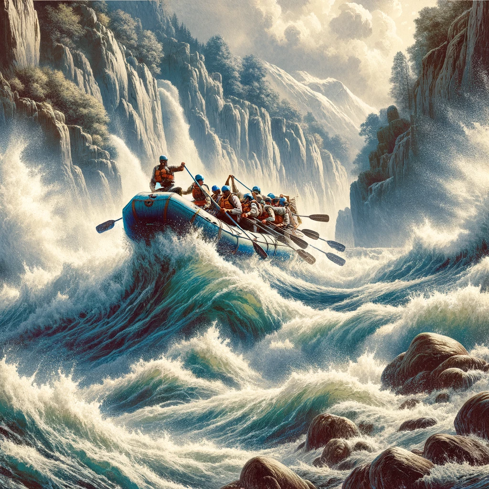

In a twist of history, the Viking explorers, known for their fearless maritime expeditions, set their sights beyond the known world, reaching the icy shores of Antarctica. Among them were adventurers who, driven by an insatiable thirst for discovery, transitioned from conquering the high seas to mastering the untamed rivers of this frozen land. Thus was born Paddle Paddle - Splash Splash, a white water rafting company with a heritage steeped in Viking exploration.

Paddle Paddle - Splash Splash capitalized on the Vikings' renowned boat-building skills, crafting durable vessels to navigate Antarctica's challenging waterways. Their rafts, inspired by longships, were designed to withstand the icy currents, offering a nod to their Nordic legacy while embracing the thrilling essence of rafting. The company quickly became synonymous with extreme adventure, attracting thrill-seekers eager to experience the unique combination of Viking resilience and the raw power of Antarctic rivers.